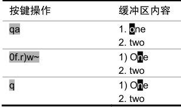
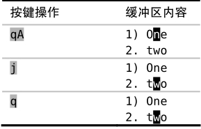

技巧68给宏追加命令
有时候，我们在录制宏的过程中会漏掉某个至关重要的步骤。在这种情况下，我们没必要从头开始重录所有的步骤，而是可以在现有宏的结尾附加额外的命令。
假设要录制以下宏（源于技巧67）：

我们刚一按下q键，停止了宏的录制，才发现应该在结束之前按一下j键，将光标移至下一行。
在解决此问题之前，先检查一下寄存器a中的内容：
➾:reg a
《 "a 0f.r)w~
在我们输入qa时，Vim将开始录制接下来的按键操作，并将它们保存到寄存器a中，这会覆盖该寄存器原有的内容。如果我们输入的是qA的话，Vim也会录制按键操作，但会把它们附加到寄存器a原有的内容之后。我们可以用这种方式更正该错误：

现在，让我们再检查一下寄存器a有什么变化：
➾:reg a
《 "a 0f.r)w~j
第一次录制的所有命令还在那里，只不过现在变成以j结尾了。
结论
这条小技巧把我们从“被迫重新录制宏”的窘境中解救出来。但此法只能在宏的结尾添加命令，如果想在宏的开头或者中间的某个位置添加内容的话，它就无能为力了。在技巧71中，我们将学习一种更有效的方法，用于修改已录制好的宏。